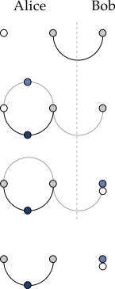

2.1. Send
Our first real algorithm involves two parties, conventionally called
Alice and Bob, who wish to exchange a quantum state
at a distance.
A letter from Alice. (Pun intended.)
We assume this is a pure state of a qudit,
\(\psi = U \triangleleft \pi^{(Z)}_0\) for some unitary \(U\). We treat U
and d as free parameters for now:
*> $alg = qudit(d) *> psi = U « char(Z, 0)
To prepare the EPR state on a qudit, we follow the general recipe \[ \pi^{(\text{EPR})} = \text{CNOT}_d \triangleleft (\pi^{(X)}_0\otimes \pi^{(Z)}_0), \] outlined in Exercise 3.2:
*> CNOT = sum(proj(Z,k) @ X**k for k in range(d)) *> EPR = CNOT « char(X, 0) @ char(Z, 0)
We suppose that Alice holds the state \(\psi\), and shares the EPR state with Bob, so the total initial state is
*> init = psi @ EPR
In order to transmit the state, we need to use a remarkable property of
the EPR state \(\pi^{(\text{EPR})}\) and its dual projector
\(\Pi^{(\text{EPR})}\) (see Exercise 4.2). For any operator
\(M \in \mathcal{A}_d\),
\[\begin{align}\Pi^{(\text{EPR})} \triangleright (M \otimes I) & =
\Pi^{(\text{EPR})} \triangleright (I \otimes M^\top)
\label{eq:mirror1} \\ (M \otimes I) \triangleleft
\pi^{(\text{EPR})} & = (I \otimes M^\top) \triangleleft
\pi^{(\text{EPR})}. \label{eq:mirror2} \end{align}
\]
In words, we can apply \(M\) to one end, or its transpose \(M^\top\) to the
other. We won't define the transpose,If you are really curious, define \(Z^\top = Z\), \(X^\top = X^*\), and \((AB)^\top = B^\top A^\top\).
since all we need is that it is involutive,
\(M^{\top\top} = M\). The goal will be to use properties
\(\eqref{eq:mirror1}\) and \(\eqref{eq:mirror2}\) on \(U\), but that requires
an entangled measurement on Alice's system. The simplest choice is the
Bell basis
\[
\label{eq:14}
\Pi^{(\text{EPR})}_{ab} = (W_{ab}^* \otimes I) \triangleright
\Pi^{(\text{EPR})},
\]
where \(W_{ab} = X^a Z^b\) is the Weyl operator basis of \(\mathcal{A}_d\)
and
\[
\Pi^{(\text{EPR})}=\text{CNOT}_d^* \triangleright (\Pi^{(X)}_0
\otimes \Pi^{(Z)}_0)
\]
is the EPR projector dual to the EPR state \(\pi^{(\text{EPR})}\). In
yaw, we implement the set \(\Pi^{(\text{EPR})}_{ab}\) as a list:
*> Pi = CNOT.d » proj(X, 0) @ proj(Z, 0) *> bell = [((X**a * Z**b @ I).d » Pi) @ I ... for a in range(d) for b in range(d)]
Next, we measure in this basis, with post-measurement state post and
measurement outcome index:
*> post, index = stMeasure(bell, init)()
What does Alice learn from the value of index? If Alice measures
\(a, b\), she applies the projector \(\Pi^{(\text{EPR})}_{ab}\) to her two
qudits. The end result is the entangled state \(\pi^{(\text{EPR})}_{ab}\)
on her two qudits and a disentangled state on Bob's.See the exercises for further discussion of this disentangling property of Bell measurements.
When \(U = I\) and \(a, b = 0\), the resulting post-measurement state is
\(\pi^{(\text{EPR})} \otimes \pi^{(Z)}_0\) as you can show in the
exercises.
What about nontrivial \(U\)? The only difference between \(U = I\) and general \(U\) is a factor of \(U \otimes I\) on Alice's qudits, and by \(\eqref{eq:mirror1}\), \[ \Pi^{(\text{EPR})}_{ab} \triangleright (U \otimes I) = \Pi^{(\text{EPR})} \triangleright (W_{ab}^*U \otimes I) = \Pi^{(\text{EPR})} \triangleright \big(I \otimes (W_{ab}^*U)^\top\big). \] In effect, we have transferred \(U\) (with correction) from Alice's first qudit to the second. Now we invoke \(\eqref{eq:mirror2}\): \[ \label{eq:17} \big((W_{ab}^*U)^\top \otimes I \big) \triangleleft \pi^{(\text{EPR})} = \big(I \otimes W_{ab}^*U \big) \triangleleft \pi^{(\text{EPR})}, \] using the fact \(M^{\top\top} = M\). Repeating the same disentangling measurement, we learn that the total state is \[ \pi^{(\text{EPR})}_{ab} \otimes (W_{ab}^*U\triangleleft\pi^{(Z)}_0). \] Thus, if Bob applies \(W_{ab} = X^a Z^b\) to his qudit, he has \(\psi\):
*> a, b = index // d, index % d *> final = (I @ I @ (X**a * Z**b)) « post
Here, final and init differ only in the location of \(\psi\).
A cute way to check that this is indeed the state is to
undo; \(U\) in Bob's state final, i.e. apply
\(I \otimes I \otimes U^*\), to nominally obtain \(\pi^{(Z)}_0\) on Bob's
system. Taking the expectation of \(I \otimes I \otimes Z\) then returns
unity just in case we genuinely have the state \(\pi^{(Z)}_0\):A state with any variance in \(Z\) must return an expectation with absolute value strictly less than \(1\).
*> undo = (I @ I @ U.d) « final *> I @ I @ Z | undo 1
We collect the full protocol as a function of dimension and
unitary: 
1. A holds \(U|0\rangle\); AB share an EPR pair.
2. A measures in the Bell basis.
3. The correction \(W_{ab}^*\) and \(U\) are mirrored.
4. A has a Bell state and B has \(W_{ab}^*U|0\rangle\).
*> def teleport(d, U): ... $alg = qudit(d) ... CNOT = sum(proj(Z,k) @ X**k for k in range(d)) ... EPR = CNOT « char(X, 0) @ char(Z, 0) ... init = (U « char(Z, 0)) @ EPR ... Pi = CNOT.d » proj(X, 0) @ proj(Z, 0) ... bell = [((X**a * Z**b @ I).d » Pi) @ I ... for a in range(d) for b in range(d)] ... post, index = stMeasure(bell, init)() ... return (I @ I @ (X**(index//d)*Z**(index%d))) « post
Zooming out, why is this algorithm important? It shows that there is a novel primitive in quantum computing: sending a quantum state. It happens instantaneously, the moment Alice performs the Bell measurement on her qudits, but is masked by the operator \(W_{ab}^*\) so that Alice must transmit the classical data \(a\) and \(b\) if Bob is to decode the state he already has in his possession.You can explore the causality-preserving aspects of this mechanism in the exercises. Teleportation and entanglement form the basis of an entirely new discipline of quantum communication, but we leave further development of this subject for another time.